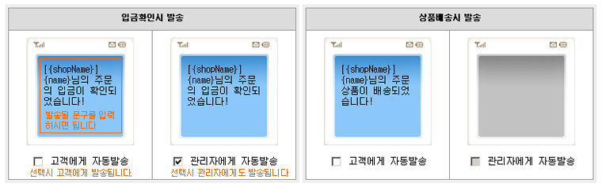
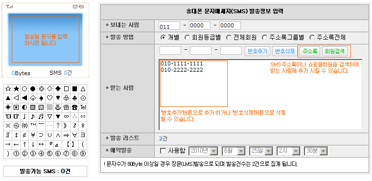

02. SMS자동발송 관리
A. 회원가입시 발송 : 회원가입시 발송될 문구와 발송유무를 선택 할 수 있습니다.
B. 비밀번호찾기시 발송 : 비밀번호찾기시 발송될 문구와 발송유무를 선택 할 수 있습니다.
C. 무통장 주문완료시 발송 : 무통장 주문완료시 발송될 문구와 발송유무를 선택 할 수 있습니다.
D. 무통장 입금요청 발송 : 무통장 입금요청 발송될 문구와 발송유무를 선택 할 수 있습니다.
E. 입금확인시 발송 : 입금확인시 발송될 문구와 발송유무를 선택 할 수 있습니다.
F. 상품배송시 발송 : 상품배송시 발송될 문구와 발송유무를 선택 할 수 있습니다.
G. 주문취소시 발송 : 주문취소시 발송될 문구와 발송유무를 선택 할 수 있습니다.
H. 상품품절시 발송 : 상품품절시 발송될 문구와 발송유무를 선택 할 수 있습니다.

! 치환코드와 치환되는 값
{shopName} : 쇼핑몰명
{name} : 회원명 or 주문자명
{goodsName} : 상품명 (상품품절시 발송에만 가능)
{number} : 주문번호 (주문관련 발송에만 가능)
{price} : 결제금액 (주문관련 발송에만 가능)
{account} : 은행명 계좌번호 입금자명 (무통장 입금요청 발송에만 가능)
{deli_comp} : 택배사 (상품배송시 발송에만 가능)
{deli_no} : 송장번호 (상품배송시 발송에만 가능)
04. SMS발송
A. 보내는 사람 : 발신자번호에 나타날 번호를 입력하시면 됩니다.
B. 발송 방법 : 개별, 회원등급별, 전체회원, 주소록그룹별, 주소록전체 중 선택 하시면 됩니다.
C. 받는 사람 : 개별발송일 경우 수신자번호를 직접 입력해서 추가 하거나 주소록 및 회원검색을 이용하여 추가할 수 있습니다.
D. 회원등급 : 회원등급별발송일 경우 원하시는 등급을 선택 하시면 됩니다.
E. 주소록그룹 : 주소록그룹별발송일 경우 원하시는 그룹을 선택 하시면 됩니다.
F. 발송 리스트 : 발송될 수신자수가 나타납니다.
G. 예약발송 : 예약발송을 하실경우 사용함에 체크 하시고 날짜를 선택 하시면 됩니다.
H. 발송내용 : 좌측 파란색 영역에 발송내용을 입력하시면 됩니다.
! 문자수가 80Byte 이상일 경우 장문(LMS)발송으로 되며 발송건수는 2건으로 집계 됩니다
